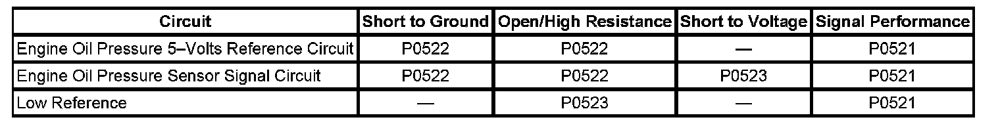

P0521
DTC P0521
DTC DESCRIPTOR
DTC P0521
Engine Oil Pressure (EOP) Sensor Performance
DIAGNOSTIC FAULT INFORMATION

Perform the Diagnostic System Check - Vehicle prior to using this diagnostic procedure. Initial Inspection and Diagnostic Overview
CIRCUIT/SYSTEM DESCRIPTION
The engine oil pressure (EOP) sensor changes voltage based on the engine oil pressure. The EOP sensor is a 3-wire sensor comprising of the signal circuit, the low reference circuit and the 5-Volt reference circuit. The engine control module (ECM) supplies 5 volts to the EOP sensor via the 5-Volt reference circuit and provides ground via the EOP low reference circuit. The ECM monitors the signal circuit of the EOP sensor to determine if the EOP sensor voltage is within the normal operating range of approximately 1-4 volts. When the engine oil pressure is high, the EOP sensor voltage is high and the ECM senses a high signal voltage. When the engine oil pressure is low, the EOP sensor voltage is low and the ECM senses a low signal voltage. The ECM sends the EOP information to the instrument panel cluster (IPC) via GMLAN serial data message. The ECM can also predict oil pressure as a function of engine speed and engine temperature.
CONDITIONS FOR RUNNING THE DTC
- The engine is running with engine speed between 1,000-3,500 RPM.
- Oil temperature is less than 140°C (284°F).
CONDITIONS FOR SETTING THE DTC
The ECM detects that the difference between the predicted oil pressure and the actual oil pressure is either less than 47 kPa (6.8 psi) or greater than 50 kPa (7.3 psi).
ACTION TAKEN WHEN THE DTC SETS
- The ECM records the operating conditions at the time the diagnostics test fails. The ECM displays this information in the Failure Records on the scan tool.
- The IPC illuminates the EOP indicator.
CONDITIONS FOR CLEARING THE DTC
- The DTC becomes history when the conditions for setting the DTC are no longer present.
- The history DTC clears after 40 malfunction-free warm-up cycles.
- The ECM receives a clear code command from the scan tool.
CIRCUIT/SYSTEM VERIFICATION
Engine ON, observe the Engine Oil Pressure Sensor parameter. The reading should be between 41-448 kPa (6-65 psi).
CIRCUIT/SYSTEM TESTING
1. Engine ON, transmission in park, vary the engine speed by 500 RPM.
2. Verify the scan tool Engine Oil Pressure Sensor parameter changes by more than 34.5 kPa (5 psi).
- If less than 34.5 kPa (5 psi), replace the EOP sensor.
REPAIR INSTRUCTIONS
Perform the Diagnostic Repair Verification after completing the diagnostic procedure. Verification Tests
Engine Oil Pressure Sensor and/or Switch Replacement for the 4.8L, 5.3L, 6.0L, and 6.2L engines